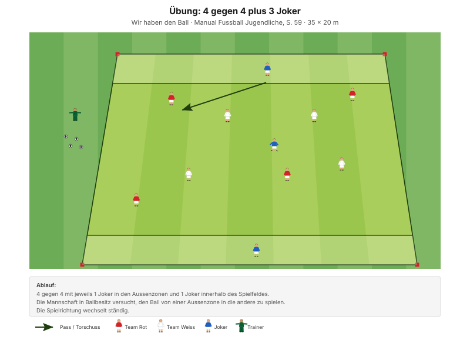
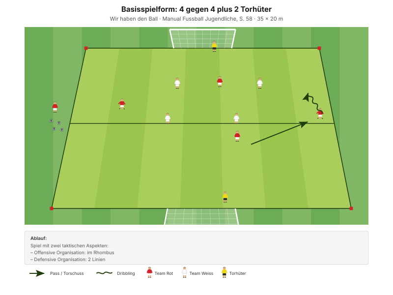

Ein Thema, viermal in wachsender Komplexität: Lösungen anbieten – sich so bewegen, dass der Mitspieler am Ball immer jemanden findet.
"Die Spieler nehmen Raum, Mitspieler und Gegenspieler wahr und erkennen erfolgversprechende Möglichkeiten in offensiver Spielrichtung." Ziel der Spielphase "Wir haben den Ball", Manual Fussball Jugendliche, S. 57
Die Frage "wo stelle ich mich hin?" wird von Stufe zu Stufe schwerer zu beantworten. Der freie Raum ist am Anfang eingezeichnet – diese Hilfe wird schrittweise weggenommen:
Warum das so aufgebaut ist: "Freilaufen" ist für D-Junioren ein abstraktes Wort. Das 9-Felder-Raster macht daraus etwas, das man sehen kann – stehst du allein im Feld, ja oder nein?
| Zeit | Min | Teil | Inhalt |
|---|---|---|---|
| 0–4 | 4 | Besammlung | Tagesthema, Gruppen einteilen |
| 4–16 | 12 | E1 | 9-Felder-Einstieg · Big 4 zwischen den Wiederholungen |
| 16–22 | 6 | E2 | 3 gegen 3 im 9-Felder-Raster |
| 22–30 | 8 | E3 | Richtungswechsel und Duell (Explosivität) |
| 30–45 | 15 | H1 | 4 gegen 4 plus 3 Joker · Aussenzone zu Aussenzone |
| 45–48 | 3 | Pause | Trinken, Raster wegräumen, Tore stellen |
| 48–70 | 22 | H2 | 5 gegen 5 plus 2 Torhüter · Rhombus |
| 70–82 | 12 | Abschluss | Freies Spiel 5 gegen 5 plus 2 Torhüter |
| 82–90 | 8 | Ausklang | Cool-down, zwei Entwicklungsfragen, Verabschiedung |
| Total | 90 |
Einstieg 26 · Hauptteil 37 · Abschluss 20 Min. – nach dem Trainingsschema des Manuals (S. 43).
Nur einmal umbauen: Die beiden 9-Felder-Raster liegen im späteren Spielfeld. In der Pause werden die inneren Teller eingesammelt, die Aussenzonen von H1 bleiben als Feldbegrenzung stehen.
12 Minuten · 2 Raster à 18 × 18 m · je 2 Teams à 3 · alle 12 Spieler
3 Wiederholungen à 1'30''–2' – zwischen den Wiederholungen je zwei Präventionsübungen.
"Im freien Raum anbieten (leeres Feld, offene Passlinie, …)" SFV-Lernbaustein "Einstieg TA: Lösungen anbieten (Freilaufen)", Phase 1
Je zwei Übungen zwischen den Wiederholungen, 25 Sekunden pro Übung:
| Bereich | Übung | Worauf achten |
|---|---|---|
| Fussgelenk | Einbeinsprünge mit Drehung | Das Knie befindet sich über der Fussspitze und zeigt in dieselbe Richtung. |
| Knie | Dynamische Ausfallschritte | Das Knie knickt weder nach innen noch nach aussen und beugt sich nicht über die Fussspitze hinaus. |
| Hüfte | World's Greatest Stretch | Schultern in einer Linie mit dem Arm. Position halten, hintere Fussspitze in den Boden drücken. |
| Hamstrings | Leg Curl mit Miniband | Knie bleiben hüftbreit, Standbein leicht gebeugt. |
"Arbeit mit Zeitvorgaben – nicht mit Anzahl Wiederholungen." Prinzip Körperstabilität, Manual Fussball Jugendliche, S. 75
Zwei Punkte pro Übung nennen, nicht mehr. Qualität vor Tempo.
6 Minuten · gleiche Raster, kein Umbau · 3 Wiederholungen à 1'30''–2'
Dieselben Felder – aber jetzt spielen die beiden Teams gegeneinander.
"Im freien Raum anbieten (leeres Feld, offene Passlinie, …)" SFV-Lernbaustein "Einstieg TA: Lösungen anbieten (Freilaufen)", Phase 2
Der Unterschied zu E1 ist die ganze Lektion: Ohne Gegner reicht es, hinzustehen. Mit Gegner muss man den freien Raum erst suchen – und er ist nur einen Moment lang frei.
8 Minuten · 3 Bahnen · Paare bilden
| Parameter | Vorgabe |
|---|---|
| Distanz | 15–30 m |
| Wiederholungen | 3 |
| Pause zwischen Wiederholungen | 1/15 (Belastung × 15) |
| Serien | 3 |
| Pause zwischen Serien | 1'30''–2' |
"Erholungszeit: 10- bis 20-fache Dauer der Belastungszeit, abhängig von der Laufdistanz. Vollständig erholen zwischen den Wiederholungen." Prinzipien Explosivität, Manual Fussball Jugendliche, S. 72
Die Pausen wirklich einhalten. Wer die Pause kürzt, trainiert Ermüdungsresistenz statt Explosivität.
15 Minuten · 35 × 20 m · 11 Spieler im Feld, 1 rotiert
Manual-Vorlage · Diagramm 07 «4 gegen 4 plus 3 Joker» (S. 59)

Ein Joker in jeder Aussenzone, ein Joker im Feld. Der zwölfte Spieler rotiert alle 90 Sekunden mit einem Aussenjoker.
Der ständige Richtungswechsel ist der Punkt. Wer sich einmal gut anbietet, hat nichts gewonnen – zwei Sekunden später geht das Spiel in die andere Richtung und er muss sich neu anbieten. Genau das fehlt oft im Spiel: einmal anbieten, dann stehen bleiben.
22 Minuten · 40 × 24 m · alle 12 Spieler
Manual-Vorlage · Diagramm 01 «4 gegen 4 plus 2 Torhüter» (S. 58)

Die Vorlage: 4 gegen 4 auf 35 × 20 m, offensiv im Rhombus, defensiv in 2 Linien.
So steht es heute · 5 gegen 5 plus 2 Torhüter auf 40 × 24 m
"Spiel mit zwei taktischen Aspekten: Offensive Organisation: im Rhombus – Defensive Organisation: 2 Linien" Basisspielform, Manual Fussball Jugendliche, S. 58
Heute wird nur die offensive Organisation gecoacht – die Raute. Die Defensivvorgabe (2 Linien) ist Thema im Training "Reden und Absichern".
12 Minuten · gleiches Feld, kein Umbau
Keine Auflagen, keine Bonusregeln, keine Punkte für schöne Pässe. Das ist Absicht: Hier wird sichtbar, was von den 70 Minuten davor hängen geblieben ist. Wer jetzt noch Regeln draufsetzt, sieht es nicht.
8 Minuten · Cool-down im Gehen, dann Kreis in der Mitte
Zuerst 3–4 Minuten lockeres Auslaufen und Mobilität, dann der Kreis. Zwei Fragen – die Antworten kommen von den Spielern, nicht vom Trainer:
"Ist es dir gelungen, die Breite und Tiefe des Spielfeldes zu nutzen? Konntest du dir daraus Vorteile verschaffen?"
"Warst du zu jeder Zeit anspielbar?" Entwicklungsfragen zur Spielphase "Wir haben den Ball", Manual Fussball Jugendliche, S. 57
Zum Schluss: Einen Namen nennen lassen – wer hat sich heute am besten angeboten? Die Spieler loben einander, nicht der Trainer. Das zahlt auf die Teamregel Respekt ein ("Wir unterstützen unsere Teamkollegen").
Material aufräumen – Teamarbeit, nicht Strafe.
| Teil | Vorlage | Seite |
|---|---|---|
| E1 – E3 | SFV-Lernbaustein "Einstieg TA: Lösungen anbieten (Freilaufen)", Phasen 1–3 | – |
| H1 | Übung "4 gegen 4 plus 3 Joker" (Diagramm 07) | 59 |
| H2 | Basisspielform "4 gegen 4 plus 2 Torhüter", Rhombus / 2 Linien (Diagramm 01) | 58 |
| Ziele, Coaching, Entwicklungsfragen | Kapitelkopf "Wir haben den Ball" | 57 |
| Explosivität, Körperstabilität | Athletik und Gesundheit | 72, 75 |
| Trainingsaufbau | Trainingsschema (Abb. 19) | 43–45 |
Alle Seitenangaben beziehen sich auf das J+S Manual Fussball Jugendliche (BASPO/SFV, 2022). Spielerzahlen und Feldmasse sind auf einen Kader von 12 Spielern angepasst. Die Diagramme zu H1 und H2 sind Nachzeichnungen der Illustrationen aus dem Manual. Dieser Trainingsplan wurde mit Unterstützung von KI (Claude, Anthropic) erstellt.